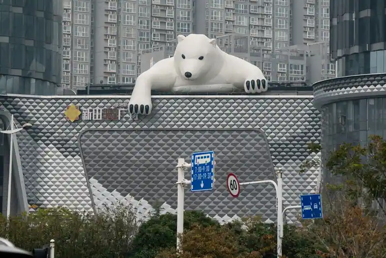
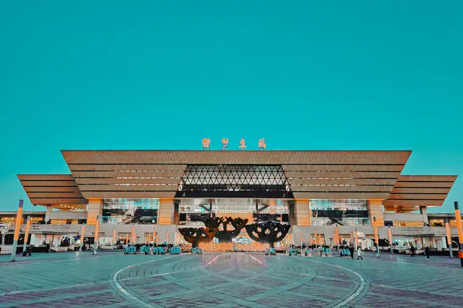
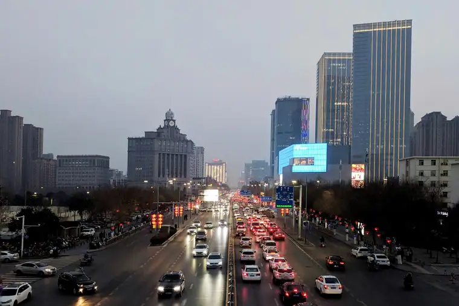

Zhengzhou Airport Transfer & Private Car
Zhengzhou Xinzheng Airport (CGO) to downtown with licensed professional driver. Fixed price, free flight tracking. Gateway to Henan, the Yellow River, and Shaolin kung fu. Reliable Zhengzhou car service for every trip. Book a private car in Zhengzhou with just a few clicks. Pick-up and drop-off in Zhengzhou, door to door.
Zhengzhou in Pictures
Real scenes from Zhengzhou — landmarks, streets and everyday life.



Zhengzhou at a Glance
An ancient capital turned modern logistics hub where the Yellow River, the Shaolin Temple, and 3,600 years of history converge in central China. Reliable Zhengzhou car service for every trip. Book a private car in Zhengzhou with just a few clicks. Pick-up and drop-off in Zhengzhou, door to door.
Name Origin
Zhengzhou (郑州) dates back to the Shang dynasty, with its earliest name referring to a fortified settlement on the central plains. It was a major capital during the Shang and has been a strategic city on the Yellow River ever since. The name 'Zheng' relates to ancient administrative divisions in the region.
Education & Universities
Zhengzhou is a rising education center in central China. Zhengzhou University is the largest university in China by student enrollment and is highly ranked in Henan. Henan University and PLA Information Engineering University are also important institutions, supporting research in engineering, agriculture, and information technology.
Metro & Transportation
Zhengzhou Metro has 8 lines covering the city center, airport, and major railway stations. It is one of the fastest-growing metro systems in China. However, reaching the Shaolin Temple, Yellow River scenic area, and ancient towns is easiest with a private car.
Natural Resources & Environment
Zhengzhou lies on the southern bank of the Yellow River in the flat North China Plain. The city is a major transportation and logistics hub, but it also faces air quality challenges in winter. Parks like Zhengzhou Yellow River Scenic Area and greenways along the river provide relief from the urban core.
🗺️ Maps & Transit
Plan your route before you arrive. Download the official metro maps below.
Top Zhengzhou Attractions
Explore Zhengzhou's ancient roots and nearby wonders with a private licensed professional driver.
Shaolin Temple
Buddhist Temple • Kung Fu
The legendary birthplace of Chan Buddhism and Shaolin kung fu, located on Songshan Mountain near Dengfeng. A must-visit for martial arts enthusiasts and spiritual travelers.
🏛️ Henan Museum
Ancient Artifacts • History
One of China's best provincial museums, with treasures from the Shang, Zhou, and Han dynasties, including bronze vessels, jade, and musical instruments.
🌊 Yellow River Scenic Area
River Views • Monuments
A large park on the northern outskirts of Zhengzhou featuring statues, viewpoints, and monuments dedicated to the 'Mother River' of China.
🗼 Erqi Memorial Tower
City Landmark • Modern History
A historic tower in the city center commemorating the 1923 Erqi Railway Strike. It is surrounded by one of Zhengzhou's busiest shopping districts.
⛰️ Songyang Pagoda
Ancient Pagoda • Architecture
The oldest existing brick pagoda in China, built during the Northern Wei dynasty. It stands on Songshan Mountain near the Shaolin Temple.
🛕 Zhengzhou Zoo & Forest Park
Nature • Family
A large urban zoo and forest park popular with families, offering green space and a break from the busy city center.
Popular Zhengzhou Routes
Fixed-price private car service for Zhengzhou's most popular journeys.
Zhengzhou Xinzheng Airport (CGO) → City Center
From ¥186 (≈ $26.2)~35 km · 40–60 min · Economy/Business/MPV
Your driver meets you at arrivals, tracks your flight, and takes you directly to hotels in Jinshui, Erqi, or Zhengdong districts.
🏝️ Zhengzhou City Tour (Full Day)
From ¥546 (≈ $76.9)8 hours · Business vehicle · Custom itinerary
Cover the Henan Museum, Yellow River Scenic Area, Erqi Tower, and a local food market in one comfortable day.
⛰️ Zhengzhou → Shaolin Temple & Songshan
From ¥546 (≈ $76.9)~80 km · 1.5 hours · 8-hour day trip
Visit the Shaolin Temple, watch a kung fu performance, and explore the ancient pagoda forest and Songshan Mountain.
⛰️ Zhengzhou → Luoyang (Longmen Grottoes)
From ¥572 (≈ $80.56)~130 km · 2 hours · 10-hour day trip
A day trip to Luoyang to see the UNESCO-listed Longmen Grottoes and the historic old city.
Transparent Pricing in Zhengzhou
Published rates, no estimate games. Check the numbers yourself before you book — and the price you see is the price your driver is paid from.
Fixed Price List — 郑州市 (Zhengzhou)
Published rates from our 2026 quote sheet. Renminbi first, USD for reference at 1 USD = ¥7.10. Every price below already includes tolls, parking, driver service and free airport waiting time (up to 60 minutes after your flight lands) — nothing is added on the day.
🛬 Airport & Intercity Transfer
One flat fare for airport pickup, drop-off or city-to-city — intercity costs the same as the airport run. 35 km and 60 minutes included; beyond that we charge by the minute and the kilometre at the rates shown.
| Vehicle | Seats | Bags | Fixed fare | USD | Beyond 35 km / 60 min |
|---|---|---|---|---|---|
| 4-seat Economy Sedan | 4 | 2 | ¥186 | ≈ $26.2 | ¥0.88/min · ¥4.09/km |
| 4-seat Comfort Sedan | 4 | 2 | ¥265 | ≈ $37.32 | ¥0.98/min · ¥4.52/km |
| 6-seat Business Van | 6 | 3 | ¥322 | ≈ $45.35 | ¥1.04/min · ¥4.81/km |
| 8-11-seat Business Van | 11 | 4 | ¥562 | ≈ $79.15 | ¥1.35/min · ¥6.25/km |
| 12-18-seat Minibus | 18 | 4 | ¥655 | ≈ $92.25 | ¥1.51/min · ¥6.97/km |
| 19-55-seat Coach Bus | 55 | 5 | ¥686 | ≈ $96.62 | ¥1.72/min · ¥7.94/km |
🚗 Hourly Private Charter
Book the car and the hours, keep the car for the day. Unused kilometres can be carried into the next tier, so a long day never turns into a penalty. The driver stays with you — you set the stops.
| Vehicle | 2h / 35km | 4h / 50km | 6h / 75km | 8h / 100km | 10h / 125km |
|---|---|---|---|---|---|
| 4-seat Private Car | ¥221 | ¥351 | ¥468 | ¥546 | ¥572 |
| 6-seat Business Van | ¥286 | ¥455 | ¥611 | ¥715 | ¥741 |
| 8-11-seat Business Van | ¥412 | ¥655 | ¥880 | ¥1030 | ¥1067 |
| 12-18-seat Minibus | ¥494 | ¥786 | ¥1056 | ¥1236 | ¥1280 |
| 19-55-seat Coach Bus | ¥593 | ¥943 | ¥1267 | ¥1483 | ¥1537 |
Why travellers book Zhengzhou with Chinawheely
Six things you get with every booking — in Zhengzhou and across all 333 cities on the platform.
Licensed travel agency, not a ride-hail app
Chinawheely is a registered travel agency (L-HUB-101603). Your booking is a travel contract with a licensed operator — not a broker handing your number to whoever answers the phone.
One locked price, shown before you pay
The price you see is the price you pay. Tolls, parking, driver service and airport waiting time are already inside it. No surge pricing, no meter, no cash-on-the-day surprise.
Flight tracked, waiting time on us
We watch your flight number in real time. If it lands late or is delayed, your driver shifts with it and the waiting time stays on us — not on your bill.
A licensed driver who knows the city
Every car is driven by a professional local driver who knows the routes, the shortcuts and the parking that actually works near the attractions — with English communication and a name board on arrival.
Free changes up to 48 hours before
Plans move. Reschedule or cancel any booking free of charge up to 48 hours before your scheduled pickup, straight from your confirmation link.
A real human on WhatsApp, 8AM–12AM Beijing time
One message reaches a person who can re-price, re-route or re-plan your trip on the spot. No ticket queue, no chatbot loop.
Book Zhengzhou at the published price
Pick your vehicle, see the fare line by line, and pay by PayPal or Alipay. Free changes up to 48 hours before pickup — or ask on WhatsApp and we will hold a car for you.
The quote is valid for 48 hours, and you can change or cancel free up to 48 hours before pickup.
Getting to Zhengzhou: Airports & Railway Stations
Getting to Zhengzhou by air, rail, or road
✈️ Airports
🏝️ Zhengzhou Xinzheng International Airport (CGO)
South of the city · 35 km to downtown
A major aviation hub in central China, serving domestic and international flights. The airport metro connects to the city, but a private car is more comfortable with luggage and takes 40–60 minutes.
🏯 Nearby Airports
Luoyang Beijiao, Xinyang Minggang, Nanyang Jiangying
Regional airports serve nearby cities, but most travelers will use CGO for Zhengzhou and the surrounding region.
🚄 Railway Stations
🏝️ Zhengzhou East Railway Station
Main HSR hub · Eastern New District
One of China's largest high-speed rail stations, serving trains to Zhengzhou, Shanghai, Xi'an, Wuhan, and Guangzhou. The station is connected to Metro Line 1 and 5.
🏝️ Zhengzhou Railway Station
Historic city center · Erqi district
The older main station in the city center, serving conventional and high-speed trains. Convenient for downtown hotels and the Erqi shopping area.
🏝️ Zhengzhou West Railway Station
Western HSR hub · West Zhengzhou
Serves high-speed trains on the Zhengzhou-Xi'an and other western routes. Useful for travelers heading to the western suburbs.
🏝️ Zhengzhou South Railway Station
New southern hub · Airport area
A newer station designed to connect the airport and southern districts with high-speed rail services.
🏝️ Zhengzhou North Railway Station
Freight hub · Northern district
Primarily a major freight marshaling station, but relevant for some regional and suburban passenger services.
🗼 Need a Station Pickup?
We meet you at the exit with a name board and help with luggage.
Book Station TransferZhengzhou's Best Photo Spots
Capture Zhengzhou from the most photogenic angles.
🌊 Yellow River Monument at Sunrise
Best in early morning
The giant monument overlooking the Yellow River is dramatic at sunrise, with soft light and fewer visitors.
🥋 Shaolin Temple Entrance
Best in morning light
The ancient temple gates and stone tablets make a powerful photo, especially when monks are training in the courtyard.
🗼 Songyang Pagoda Silhouette
Best at sunset
The elegant brick pagoda is photogenic against the sky, especially in late afternoon light.
🗼 🏙️ Erqi Tower at Night
Best after dark
The illuminated tower surrounded by modern shopping lights captures Zhengzhou's blend of history and commerce.
🏛️ Henan Museum Bronze Hall
Best during opening hours
The museum's grand architecture and bronze collection make for striking cultural photography.
⛰️ 🌳 Songshan Mountain Trails
Best on clear days
The mountain paths and forest views offer natural landscapes just outside the city.
Food & Shopping in Zhengzhou
🍽️ Must-Try Zhengzhou Cuisine
Hui Mian (Braised Noodles)
A hearty Henan noodle soup with lamb, seaweed, tofu, and vermicelli. The signature dish of Zhengzhou and the surrounding region.
Youmian (Steamed Noodles)
Thin wheat noodles steamed with meat and vegetables, then lightly fried. A popular home-style dish in Henan.
Mutton Soup with Flatbread
Tender mutton in a rich broth served with crumbled flatbread. A warming breakfast or lunch, especially in winter.
Zhengzhou Roast Duck
Crispy-skinned duck with pancakes, hoisin sauce, and scallions. A local interpretation of the famous Zhengzhou dish.
🛍️ Shopping Destinations
Erqi Business District
The busiest shopping area in Zhengzhou, centered around Erqi Tower. Full of malls, department stores, restaurants, and street vendors.
Zhenghongcheng (David Plaza)
A major upscale shopping mall in the city center with international brands, boutiques, and dining options.
Dehua Street Pedestrian Street
A historic commercial street near the railway station, known for budget shopping, snacks, and local goods.
Century Happy City
A large shopping and entertainment complex popular with families, offering shopping, dining, and amusement facilities.
🎁 What to Buy in Zhengzhou
Songshan Shaolin Souvenirs
Kung fu uniforms, meditation beads, and Shaolin-themed items from the temple shops.
Henan Cloisonné (Jingtailan)
Colorful enamelware from traditional workshops, featuring intricate floral and geometric designs.
Yellow River Pearls & Stone Carvings
Local stone crafts and jewelry inspired by the Yellow River and regional geology.
Zhengzhou Date Paste (Zao Ni)
Sweet jujube paste and date products, a traditional Henan specialty and edible souvenir.
Intangible Cultural Heritage & Living Crafts of Zhengzhou
Meet the traditional arts that have shaped Zhengzhou's identity for centuries.
🥋 Shaolin Kung Fu
One of the world's most famous martial arts traditions, developed by monks at the Shaolin Temple over 1,500 years ago. It combines physical training, meditation, and philosophy.
Where to find it: Shaolin Temple and nearby martial arts schools.
🎭 Henan Opera (Yu Opera)
One of China's major opera forms, known for its expressive singing, vivid costumes, and stories drawn from history and folklore.
Where to find it: Henan Opera theaters and cultural festivals in Zhengzhou.
⛰️ 🎶 Songyang Guqin Music
Ancient zither music associated with the Songshan region, traditionally played by scholars and monks in mountain retreats.
Where to find it: Songshan scenic area and cultural performances.
🏺 Dengfeng Porcelain
Traditional ceramics from the Dengfeng region near Songshan, known for celadon glazes and classical forms.
Where to find it: Local craft shops and museums in Dengfeng.
🎨 Zhongmu Paper Cutting
Intricate folk paper-cut art from Zhongmu County near Zhengzhou, often depicting local legends and auspicious symbols.
Where to find it: Folk art markets and cultural fairs in Zhengzhou.
🧵 Henan Embroidery
Colorful embroidery from Henan's traditional craft centers, featuring motifs from opera, folk tales, and nature.
Where to find it: Craft shops and cultural markets in Zhengzhou.
Zhengzhou Local Secrets
Insider tips to help you experience Zhengzhou like a local.
Watch a Real Kung Fu Show
The Shaolin Temple has daily martial arts performances by trainee monks. Arrive early to get good seats and combine it with a temple tour.
Eat Hui Mian for Lunch
Find a local noodle shop and order Hui Mian. It's the true taste of Zhengzhou and surprisingly affordable.
Book a Car for Songshan
Public transport to the Shaolin Temple is slow and crowded. A private car lets you visit Songyang Pagoda, Shaolin, and the pagoda forest in one day.
Check Air Quality in Winter
Winter can bring haze to the North China Plain. Plan outdoor photography for clear days and indoor museums for hazy days.
Shop Near Erqi Tower
The area around Erqi Tower has the best mix of local snacks, budget shopping, and modern malls in one walkable area.
Visit Henan Museum First
The museum is free but popular. Reserve a slot in advance and start early to see the Mawangdui-style treasures without crowds.
Day Trips from Zhengzhou
Explore beyond Zhengzhou with these rewarding day trips.
Shaolin Temple & Songshan Mountain
From ¥546 (≈ $76.9)~80 km · 1.5 hours · 8-hour day trip
Experience the birthplace of Shaolin kung fu and explore the sacred Songshan mountain area.
Luoyang (Longmen Grottoes & Old City)
From ¥572 (≈ $80.56)~130 km · 2 hours · 10-hour day trip
Visit the UNESCO World Heritage Longmen Grottoes and the historic old city of Luoyang.
Kaifeng (Ancient Northern Song Capital)
From ¥546 (≈ $76.9)~70 km · 1 hour · 8-hour day trip
Explore the former Song dynasty capital with its Qingming scroll park, Iron Pagoda, and night market.
Dengfeng Observatory & Ancient Academy
From ¥468 (≈ $65.92)~80 km · 1.5 hours · 6-hour day trip
Visit the ancient astronomical observatory and Songyang Academy on Songshan Mountain.
Best season to travel in Zhengzhou
Plan your trip around Zhengzhou's seasons for the best experience.
Spring (Mar–May)
10–24°C · Mild & Windy
Pleasant temperatures and blooming flowers on Songshan. Good for temple visits and outdoor photography, though dust storms are possible.
Summer (Jun–Aug)
24–34°C · Hot & Humid
Hot and humid, but the mountains offer cooler escapes. Early starts are best for outdoor activities.
Autumn (Sep–Nov)
12–24°C · Cool & Clear
The best time to visit. Clear skies, comfortable temperatures, and beautiful foliage on Songshan Mountain.
Winter (Dec–Feb)
-2–8°C · Cold & Dry
Cold and sometimes hazy, but tourist sites are quiet. Indoor attractions like museums and temples are still enjoyable.
Best Time to Visit zhengzhou
zhengzhou runs from 0.5 °C in January to 27.1 °C in July, an annual average of 14.7 °C and about 641 mm of rain across the year. The chart and the four seasons below are built from the city’s own climate record.
July is the warmest month at 27.1 °C and January the coldest at 0.5 °C, a spread of 26.6 °C. Rain is heaviest in July, which averages 146 mm, and lightest in December at 9 mm. Summer is the wettest stretch of the year at about 353 mm in total, while Winter is the driest at 32 mm.
For most travellers the winter window is the one to plan around: it carries only about 32 mm of rain across the whole season, against roughly 353 mm in summer. The 26.6 °C gap between the extremes also means the shoulder months either side of summer sit in a comfortable band, with many days in the high teens or low twenties.
Private transfers are booked by pickup time rather than by season, so the weather only changes what you do with the hours you have. In January a driver waiting at the terminal matters, because the afternoon average sits around 0.5 °C; by July the same day averages 27.1 °C and the car is most of the day’s comfort.
Spring
March, April, May · avg 15.4 °C · 120 mm rain
March averages 8.8 °C and May 21.5 °C, so the season warms fast.
Summer
June, July, August · avg 26.3 °C · 353 mm rain
July peaks at 27.1 °C, the warmest point of the whole year.
Autumn
September, October, November · avg 15.0 °C · 137 mm rain
September averages 21.2 °C and November 8.4 °C.
Winter
December, January, February · avg 2.2 °C · 32 mm rain
January bottoms out at 0.5 °C, the coldest point of the whole year.
Useful Chinese Phrases for Zhengzhou
A few key phrases to help you navigate Zhengzhou.
你好 (Nǐ hǎo)
Hello
Essential for getting around and communicating with your driver.
谢谢 (Xièxiè)
Thank you
Essential for getting around and communicating with your driver.
我要去少林寺 (Wǒ yào qù Shàolín Sì)
I want to go to Shaolin Temple
Essential for getting around and communicating with your driver.
这个辣吗？ (Zhège là ma?)
Is this spicy?
Essential for getting around and communicating with your driver.
厕所在哪里？ (Cèsuǒ zài nǎlǐ?)
Where is the bathroom?
Essential for getting around and communicating with your driver.
多少钱？ (Duōshao qián?)
How much is it?
Essential for getting around and communicating with your driver.
Book Your Zhengzhou Airport Transfer
Fixed price, licensed professional driver, free flight tracking. From CGO to any Zhengzhou hotel.
Get Instant QuoteQuestions? WhatsApp +86-155-2777-1775
Travel Essentials for Your Zhengzhou Trip
Make your Zhengzhou journey smoother with these essential services.
Mobile Pocket Wi-Fi
Stay connected anywhere in China with a pocket Wi-Fi device. Pick up at CGO or have it delivered to your hotel.
Book Wi-Fi at ChinaWiFiGoEnglish-Speaking Guide
Explore Zhengzhou's history with a professional English-speaking guide. Custom tours and skip-the-line access.
Book Guide at VIPChinaGuideMedical Services
Add a health checkup, dental cleaning, or TCM treatment to your trip. World-class care at a fraction of Western prices.
Book Medical at MediEscortChinaPopular Zhengzhou Airport Transfer Routes
🚗 Zhengzhou Airport Transfer Airport Transfer to Shaolin Temple
Book Zhengzhou Airport Transfer To Shaolin Temple private car service with licensed driver. Fixed price airport transfers and city tours. No hidden fees.
View Route & Book →Best season to travel in Zhengzhou
🌸 Best Season March – May / September – November — Spring (March–May) brings comfortable temperatures and blooming peonies across the city's parks. Autumn (September–November) is the most comfortable season, with clear skies and pleasant temperatures for visiting the Shaolin Temple.
The best season. Peonies bloom across Zhengzhou's parks in April–May. Comfortable temperatures for city sightseeing and day trips to the Shaolin Temple.
Hot and often hazy. Early morning visits to the Shaolin Temple are best. The city's shopping centres provide air-conditioned relief.
One of the best seasons. Clear skies, cool evenings, and comfortable temperatures for the Shaolin Temple day trip. The ginkgo trees at Century Park turn golden in late October.
Cold and dry. The Henan Museum is an excellent refuge from the cold. The Shaolin Temple in winter is atmospheric with fewer tourists.
🧧 Chinese New Year 2027 in Zhengzhou
Chinese New Year 2027 falls on January 29, 2027 -- the start of the Year of the Snake on the Chinese lunar calendar. Zhengzhou at the heart of Henan province is the cradle of Chinese civilization with profound Spring Festival traditions. Keywords: when is chinese new year 2027, chinese new year 2027.
Chinese Spring Festival Facts
When is Chinese New Year 2027? January 29, 2027
Chinese New Year 2027 is January 29, 2027. Zhengzhou at the heart of Henan province is the cradle of Chinese civilization -- Spring Festival traditions here date back thousands of years.
Shaolin Temple Martial Arts Performances (少林寺)
The nearby Shaolin Temple (少林寺) -- the birthplace of Chinese martial arts -- hosts special martial arts performances during Spring Festival. Kung fu demonstrations, Wushu performances, and traditional ceremonies.
Chinese Spring Festival Food -- Henan Style
Zhengzhou is famous for its wheat-based foods -- LAMIAN noodles (拉面), steamed buns (馒头), and dumplings (饺子). Henans cuisine is simple, honest, and deeply rooted in wheat culture.
Top Spring Festival Activities
Shaolin Temple Kung Fu Performances (少林寺)
The Shaolin Temple (少林寺) near Zhengzhou hosts special Spring Festival martial arts performances -- kung fu demonstrations by Shaolin monks, Wushu performances, and traditional ceremonies. About 90min from Zhengzhou by taxi.
Henan Museum Spring Festival Activities
The Henan Museum (河南博物院) hosts special Spring Festival cultural activities -- traditional music performances, calligraphy demonstrations, and cultural exhibitions.
Must-Try Spring Festival Food
Henan Lamian Noodles (河南拉面)
Henan is famous for its hand-pulled lamian noodles (拉面) -- long chewy noodles served in a rich beef broth. Eaten as a warming dish during the cold January holiday.
Tip: Best at: Zhengzhou local noodle restaurants
Zhengzhou Jiaozi
Zhengzhou jiaozi are typically large with a thick wrapper. Filled with pork and cabbage. Eaten on the first day of the new year. Available at wet markets.
Traditional Customs
Shaolin Temple Pilgrimage for the New Year
Henan families traditionally visit the Shaolin Temple (少林寺) on the first day of the new year -- to pray for health and good fortune. The martial arts performances are an added attraction.
💎 Zhengzhou & Central China Jade
Zhengzhou is the gateway to Dushan jade (独山玉) -- one of China's five famous jades from Nanyang -- and the southern red agate mines of Baofeng County. A private car day trip from Zhengzhou puts you directly at the source markets.
Dushan Jade (独山玉)
One of China's five famous jades, sourced at Dushan Mountain near Nanyang, 2 hours south of Zhengzhou. Famous for its vivid green-and-white colour combinations. Best bought at Nanyang's source markets.
Southern Red Agate (南红玛瑙)
Baofeng County in Henan is the world's most important source of southern red agate -- prized crimson red gemstone. Available at Nanyang jade markets. The best specimens rival Burmese rubies in colour.
Nanyang Jade Market Day Trip
Private car from Zhengzhou to Nanyang's jade wholesale markets -- the source of Dushan jade and southern red agate. Combine with a visit to the Dushan jade mines. Full day trip from ¥150.
🏆 Major Sports Events in Zhengzhou
Zhengzhou is central China's emerging sports city -- home to the Henan football and basketball clubs. The Zhengzhou Hanghai Stadium is one of Chinese football's most atmospheric venues.
Zhengzhou Marathon (郑州马拉松)
2026: October (annual)
The Zhengzhou Marathon (郑州马拉松) passes the Henan Museum, Zijin Mountain (紫荆山), and the modern CBD. 25,000 runners. One of central China's most rapidly growing marathons.
Venue: Start: Henan Museum area; Finish: Zhengzhou Sports Centre. Metro: Henan Museum (Line 2).
Chinese Super League Football (中超联赛 – 河南酒祖杜康)
2026 season: March to November
Henan (河南队) competes in the CSL at the Zhengzhou Hanghai Stadium (郑州航海体育场). One of Chinese football's most loyal supporter bases. The Dragon culture runs deep in Henan.
Venue: Zhengzhou Hanghai Stadium (郑州航海体育场), Erqi District. Metro: Putian Street (Line 5).
Henan Men's Basketball CBA (河南赊店老酒)
2026-2027 season: October 2026 to May 2027
Henan's CBA team (河南赊店老酒) plays at the Zhengzhou Sports Centre. The 2026-2027 season features a competitive roster with ambitions to improve on previous seasons.
Venue: Zhengzhou Sports Centre (郑州体育中心). Metro: Nanzhong (Line 5).
Visa & Entry Information for Zhengzhou
Plan your China trip with confidence -- everything you need to know about visas, border crossings, and getting to Zhengzhou.
China Visa Guide
Complete guide to tourist visas, business visas, application process, and 144-hour transit visa-free access at major Chinese cities.
Embassies & Consulates
Find Chinese embassies and consulates worldwide -- including USA, UK, Canada, Australia, Germany, France, Japan, South Korea and more.
Entry & Travel Guide
From airport immigration to paying with your phone -- everything you need to know before and after arriving in China.
🎭 Concerts & Performances in Zhengzhou
Zhengzhou has a vibrant year-round performing arts scene from world-class symphony orchestras and international pop concerts to traditional cultural shows and annual arts festivals. Here is your guide to the best live performances in Zhengzhou.
🎻 Classical Music & Symphony
Henan Provincial Art Centre Performance Season
Henan premier performing arts complex. Hosts Henan Provincial Symphony Orchestra, international touring productions, traditional Henan opera. Central China most important performing arts venue.
Venue: Henan Provincial Art Centre
Season: Year-round
🎭 Traditional Cultural Performances
Henan Opera House Yu Opera Season
Premier venue for Yu Opera (Yuju), Henan most famous traditional opera style and one of China five major opera systems. Features classic productions like Mulan and Mu Guiying Takes Command.
Venue: Henan Opera Theatre
Season: Year-round (regular)
Henan Museum Traditional Music Series
Henan Museum hosts the renowned Ancient Music Ensemble performing on reconstructed ancient instruments. Concerts of pre-Qin dynasty court music and traditional Chinese classical pieces.
Venue: Henan Museum Concert Hall
Season: Year-round (monthly)
🎵 Music & Arts Festivals
Annual international martial arts festival celebrating Shaolin Kung Fu. Spectacular Wushu demonstrations, Shaolin monks performances, martial arts competitions. Performances in Zhengzhou and at Shaolin Temple.
Venue: Shaolin Temple / Zhengzhou Sports Centre
Season: May annually
Zhongyuan Music Festival - Zhengzhou Electronic & Pop Festival
Central China largest pop and electronic music festival. Major Chinese pop stars, EDM DJs, rock bands over multiple days. Major event on Zhengzhou music calendar.
Venue: Zhengzhou Green Expo Garden
Season: September annually
Attend a Zhengzhou Concert with a Private Car
Avoid metro crowds after the show. Our licensed professional driver will drop you at the door and pick you up after. Available for all venues in Zhengzhou.
Book Concert Transfer🥋 Major Sports Events in Zhengzhou
Zhengzhou hosts an impressive calendar of major sports events throughout the year. From professional football and basketball to international marathons and winter sports, here is your complete guide to sports in Zhengzhou for 2026 and 2027.
⚽ Football & Soccer
Chinese Super League (CSL) - Henan FC Home Matches
Season: March-November 2026 Year: 2026
Henan FC is one of Chinese football most storied clubs. Home games at 30,000-seat Hanghai Stadium feature famous Huagong (Chime) ultras - among most passionate in China. 2026 season: March-November.
Venue: Zhengzhou Hanghai Stadium
🏃 Marathons & Running
Zhengzhou International Marathon
Season: April annually (2026 TBC) Year: 2026
Zhengzhou Marathon runs from Henan Museum through modern CBD to Yellow River. Combination of ancient heritage and modern city makes this distinctive.
Venue: Henan Museum to Zhengzhou CBD to Yellow River
🏀 Multi-Sport Events
Henan Province Games
Season: July-August (quadrennial 2026 TBC) Year: 2026
Quadrennial Henan Province Games multi-sport event featuring athletics, swimming, martial arts, team sports from all cities in Henan.
Venue: Zhengzhou Olympic Sports Centre and provincial venues
🥋 Martial Arts
Shaolin Wushu International Festival - Zhengzhou Events
Season: May-June annually Year: 2026
Major Wushu (martial arts) events as part of international Wushu circuit. Features traditional Wushu forms, Sanda (combat), team performances at highest international level.
Venue: Henan Provincial Sports Centre / Zhengzhou Sports Centre
🏀 Basketball
Zhengzhou International Basketball Tournament
Season: August annually Year: 2026
Annual international basketball tournament at Zhengzhou Olympic basketball venue. Features club teams from China, Korea, Japan, Southeast Asia.
Venue: Zhengzhou Olympic Sports Centre Basketball Arena
Get to Zhengzhou Sports Events with a Private Car
Avoid metro crowds on match day. Our licensed professional driver takes you door to venue and back. Available for all stadiums, arenas, and courses in Zhengzhou.
Book Sports Transfer☕ Tea Culture & Tea House Guide in Zhengzhou
Zhengzhou has a long tea tradition. Xinyang Maojian is what you will find most often in the city's tea houses — some are local products, others are the everyday teas carried in from the producing areas. This guide covers where to drink them, what to order, and how the customs work.
☕ Premium Green Tea
Zhengzhou Xinyang Maojian (信阳毛尖) - Henan Famous Green Tea
Venue: Henan Tea Museum, Zhengzhou teahouses, Xinyang (day trip) Hours: Year-round, best spring
Xinyang Maojian (信阳毛尖) is Henans most famous tea, grown in mountainous areas of Xinyang in southern Henan. One of Chinas top ten teas, known for its tight, curly leaves and fresh, slightly bitter flavor. Zhengzhou teahouses serve this regional tea as the signature tea of Henan province.
Zhengzhou Shaolin Tea Culture (少林寺茶文化)
Venue: Shaolin Temple (少林寺), Dengfeng (day trip from Zhengzhou) Hours: Daily 08:00-18:00
The famous Shaolin Temple (少林寺) near Zhengzhou has rich tea culture closely connected to Chan (Zen) Buddhism. Monks have cultivated tea for centuries, and visitors can experience traditional Chan tea ceremonies. Temple tea is believed to aid meditation.
☕ Herbal & Flower Tea
Zhengzhou Millet Tea (小米茶) and Northern Wheat Tea
Venue: Old city area teahouses Hours: Year-round, peak winter
Henan, as a major wheat-producing region, has unique tea traditions including millet tea (小米茶) made from roasted millet. This warming tea is popular during cold northern winters. Specialty tea shops in Zhengzhou sell various northern-style grain teas alongside traditional Chinese teas.
☕ Tea Culture
Zhengzhou Yellow River Tea Culture
Venue: Yellow River scenic area, Jinshui District Hours: Daily 09:00-18:00
The Yellow River (黄河) flows through Henan and has inspired unique tea culture in the region. Tea houses along the Yellow River near Zhengzhou serve tea with views of the great river, connecting tea culture to Henans ancient civilization and agricultural heritage.
Zhengzhou Northern Tea House Tradition
Venue: Jinshui and Erqi District teahouses Hours: Daily 09:00-22:00
Zhengzhou has a distinctive northern Chinese tea house culture where tea is served in a more straightforward, less ceremonial manner than in southern China. The emphasis is on the social aspect of tea drinking, with locals gathering in teahouses for conversation, mahjong, and people-watching.
Experience Zhengzhou Tea Culture with a Private Car
Let our licensed professional driver take you to the best teahouses, tea markets, and tea villages in Zhengzhou. No navigating unfamiliar streets — door to door, in comfort.
Book Tea TourMore Zhengzhou Guides & Transfers
Airport transfers, day trips and practical guides for Zhengzhou — pick the one that matches your itinerary, then book the car in a minute.
Zhengzhou Airport Transfer to Shaolin Temple
Book Zhengzhou Airport Transfer To Shaolin Temple private car service with licensed driver
Best Time to VisitZhengzhou Best Time to Visit
Book Zhengzhou Best Time private car service with licensed driver
Day TripsZhengzhou Day Trips & Excursions
Book Zhengzhou Day Trips private car service with licensed driver
Food & ShoppingZhengzhou Food & Shopping Guide
Book Zhengzhou Food Shopping private car service with licensed driver
Photo SpotsZhengzhou Best Photo Spots & Photography Locations
Book Zhengzhou Photo Spots private car service with licensed driver
Tea CultureZhengzhou Tea Culture & Tea House Guide
Book Zhengzhou Tea Culture private car service with licensed driver
More China destinations
Compare routes, published prices and local driver tips across the cities we cover.